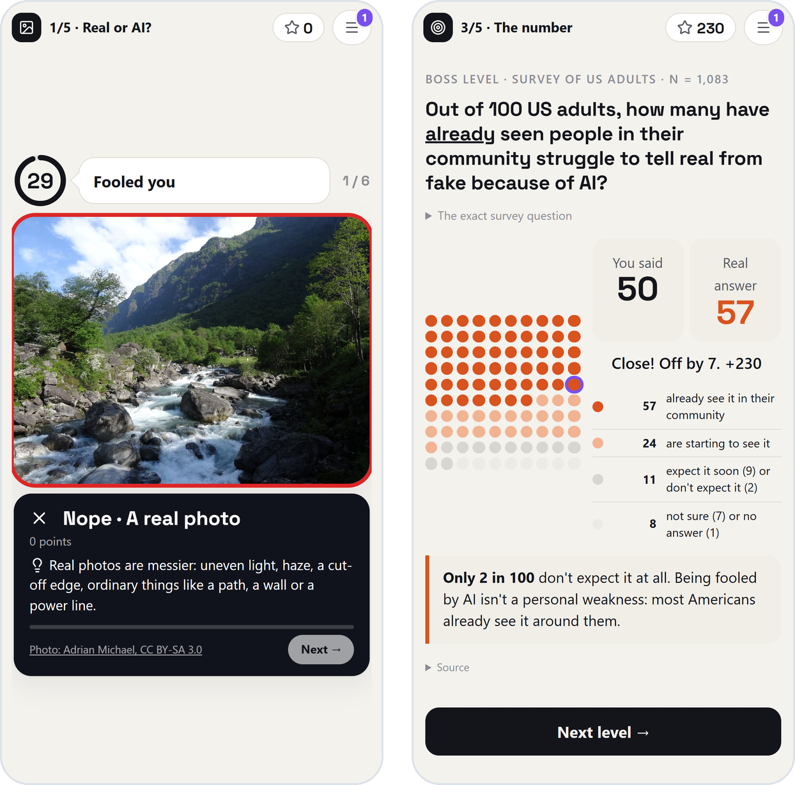

Real or AI?
A four-minute game about the Americans on AI survey
Adhurim Thaqi17.12.2026
Alain Leclerc von Bonin · Gordan Savičić · Fiona Zellweger
Scan and play
Everyone in the room gets the same pictures and questions. It takes about four minutes. At the end, your name shows up on the big screen.
Room HSLU
Open the live roomNobody reads surveys
“The challenge is knowing whether the people commenting represent the wider population or just a very vocal group.” (interview 2)
57 in 100 already see it around them
Only 2 in 100 don't expect it at all. Being fooled by AI isn't a personal weakness.
Source: Americans on AI, 10–14 Sep 2026, n = 1,083Play first, then see the data
Five levels in about four minutes. Every level ends with a real number from the survey, so you compare your guess with 1,083 US adults.
Spot the fakes
6 pictures, 2 texts: real or AI?
The number
Guess how many of 100 see it
True or false
3 claims, some numbers wrong
Your turn
Your answer vs. US adults
What it looks like
You get fooled first. Then the survey shows you're not alone: most Americans already see it happen.
Fig. 1 — v8 on a phone: a picture answer and the number level

Worried, but it's coming anyway
Most Americans are worried about AI, and most think it's coming anyway. Younger adults are more likely than older adults to think it can still be shaped.
Younger adults: it can still be shaped
27 in 100 of 18–34 vs 8 in 100 of 65+. The gap is bigger than the margin of error.
Source: Americans on AI, 10–14 Sep 2026, n = 1,083What testing changed
| Feedback | From | What changed | Version |
|---|---|---|---|
| Pictures too easy to tell apart | Mentoring, 12.11 | Hard mode with new 2026 AI pictures | v7 |
| Always scrolling and clicking Next | Mentoring, 12.11 | The game moves on by itself | v7 |
| 7 levels are too many | Coaching, 19.11 | 5 levels, “more or fewer” removed | v8 |
| Side panels pull attention away | UI review, 26.11 | One drawer, opened only on a tap | v8 |
| It scrolls on my phone | Phone test, 26.11 | Every playing screen fits | v8 |
Every number is checked
The game reads every survey number from the official CSV, and a script compares the page with the data. These are US adults, not Swiss, and the game says so.
Being fooled by AI isn't a personal weakness. Most Americans already see it around them.
The game lets you feel it first and then shows you the number.
References
Athena Insights & NORC at the University of Chicago. (2026). Americans on AI [Survey, wave 10–14 Sep 2026]. americanson.ai
Pictures: Wikimedia Commons (credited in the game, CC BY-SA / CC0). AI pictures made in Figma AI (gpt-image-2.5, gemini-3.1-flash-image).
Texts: Wikivoyage (versions from before ChatGPT); AI texts written by Claude. Icons: Lucide (ISC licence).
Design references: Which Face Is Real?; NYT The Upshot, “You Draw It” (2015); Pew Research Center, Political Typology Quiz.
Thank you.
Questions & discussion
Adhurim Thaqiadhurimthaqi.github.io/dataset-datastorytelling